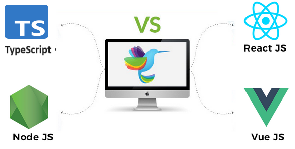

My name is
Favour David Omirin,
a passionate Frontend Engineer with a background in graphic design and cryptocurrency based in Osun State, Nigeria. I specialize in crafting intuitive and dynamic user experiences using HTML, CSS, JavaScript, Node.js, React, Vue, and TypeScript.
Click here to check out my blog
Click here to check out my portfolio
Click here to read more about me
ABOUT ME 👶
My name is Favour Omirin. People often call me Favour, Modred, or David. You can call me by whichever is okay by you. My journey as a web developer has been deeply influenced by my passion for working with JavaScript and its vibrant ecosystem. JavaScript's versatility and the powerful frameworks and libraries that have emerged around it have been a driving force in my development career. I find immense satisfaction in solving complex problems and creating dynamic, user-friendly web applications. My enthusiasm for JavaScript is not just about writing code; it's about being part of a dynamic and ever-evolving community that constantly pushes the boundaries of what is possible on the web.
This passion has driven me to continuously learn and stay updated with the latest trends and advancements in the JavaScript world. It motivates me to contribute to projects that make a difference and to collaborate with other developers who share the same zeal. Whether I'm debugging an issue, optimizing performance, or exploring new frameworks, my dedication to JavaScript and web development remains unwavering. This commitment is at the heart of my professional identity and fuels my ongoing quest for excellence in the field.
.jpeg)
Early Passion for Design
.jpeg)
I'm a
(a Computer Programmer). My journey into the tech industry began with a passion for creating visually compelling designs. As a child, I was always drawn to art, spending countless hours sketching and experimenting with colors. This innate love for aesthetics gradually evolved as I discovered the world of digital design. I remember the first time I stumbled upon graphic design software; it felt like a whole new world had opened up to me. The ability to create something beautiful from scratch, using just a computer and my imagination, was exhilarating.As I delved deeper into digital design, my curiosity naturally led me to explore the underlying technologies that powered these creations. I began experimenting with web design, where I found the perfect blend of my artistic inclinations and newfound technical interests.
Learning HTML and CSS was my gateway, but it was JavaScript that truly captivated me. The ability to add interactivity and functionality to my designs opened up endless possibilities. My journey into programming took off from there, as I eagerly learned more about JavaScript and its ecosystem. I started building simple web applications, each project more ambitious than the last, and soon found myself deeply immersed in the world of coding. This transition from visual design to programming was a seamless and exciting progression, allowing me to harness my creativity while developing the technical skills needed to bring my ideas to life. My background in art continues to influence my approach to coding, ensuring that my applications are not only functional but also aesthetically pleasing and user-friendly.
Blending Design and Development
Over time, my skills in both design and development grew
significantly. I started taking on freelance projects, which
provided me with valuable real-world experience and a deeper
understanding of the importance of user experience. These projects
taught me that creating a website or an application isn't just about
making it visually appealing; it's about ensuring that it is
intuitive and enjoyable for users. I realized that a beautiful
design means little if it doesn't offer a seamless and engaging user
experience.
Through these experiences, I honed my ability to balance aesthetics
with functionality. I learned to consider every detail, from the
placement of buttons to the flow of user interactions, ensuring that
each element contributes to a cohesive and user-friendly design.
This holistic approach became a core part of my philosophy as a web
developer.
I found that my background in art and my technical skills complemented each other perfectly, allowing me to create web applications that are both beautiful and highly functional. Each project became an opportunity to refine my skills and deepen my understanding of how design and development intersect. This continuous learning and adaptation fueled my passion for web development, driving me to create applications that not only meet but exceed user expectations.
Collaboration and Communication
One of the turning points in my career was when I began
collaborating closely with designers. My background in graphic
design proved to be a significant asset during these
collaborations. I could communicate effectively with designers,
understand their vision, and translate their visual concepts
into seamless web interfaces. This synergy between design and
development was pivotal in my growth as a web developer.
Working alongside designers allowed me to appreciate the
intricate details that go into creating a compelling user
experience. I learned to interpret their creative ideas and
implement them technically, ensuring that the final product
remained true to the original vision. This ability to bridge the
gap between design and development became one of my greatest
strengths.
By understanding both perspectives, I was able to create
cohesive and engaging digital experiences that satisfied both
aesthetic and functional requirements. This collaborative
approach not only improved the quality of my work but also
enhanced my communication skills, making it easier to convey
complex technical concepts to non-technical team members.
This experience reinforced my belief in the importance of
collaboration and communication in the development process. It
highlighted the value of combining creative and technical skills
to produce web applications that are visually appealing,
user-friendly, and technically sound.

Expanding My Skill Set: Node.js, React, Vue, and TypeScript
As my journey continued, I expanded my technical skill set to
include Node.js, React, Vue, and TypeScript. Learning these
technologies was a transformative experience, and I was fortunate to
enhance my skills at AltSchool Africa. The rigorous curriculum and
hands-on projects at AltSchool Africa provided me with a deep
understanding of these tools and frameworks.
Learning Node.js allowed me to work on server-side development,
giving me a deeper understanding of full-stack development. React
and Vue, with their component-based architecture, revolutionized the
way I approached front-end development, enabling me to build
complex, interactive user interfaces with ease. TypeScript, with its
static typing, enhanced the robustness and maintainability of my
code, making it easier to manage large-scale projects.

Fascination with Blockchain and Cryptocurrency
My interest in technology didn't stop at web development; I became
increasingly fascinated with the world of cryptocurrency and
blockchain technology. The concept of a decentralized, secure
digital economy intrigued me, sparking a desire to delve deeper into
these cutting-edge technologies. I began exploring how blockchain
and cryptocurrency could be integrated into web applications, which
opened up new avenues for innovation in my projects.
This exploration added a unique dimension to my work, allowing me to
create applications that stood out due to their incorporation of
secure and decentralized features. The challenge of building
decentralized applications (dApps) was both exciting and demanding,
pushing me to expand my skill set and deepen my understanding of
blockchain technology.
Through this journey, I gained valuable insights into the digital
currency landscape, learning about smart contracts, distributed
ledgers, and the various protocols that underpin blockchain systems.
This knowledge not only enhanced my technical capabilities but also
broadened my perspective on the potential applications of blockchain
technology.
By integrating these technologies into my projects, I was able to
offer innovative solutions that met the growing demand for security
and decentralization in the digital world. This fascination with
blockchain and cryptocurrency continues to drive my passion for
learning and innovation, keeping me at the forefront of
technological advancements.
Commitment to Lifelong Learning
Throughout my career, I have consistently demonstrated my ability to
adapt to new technologies and methodologies. Whether it's learning a
new programming language, adopting a new framework, or understanding
emerging trends in the tech industry, I have always been committed
to lifelong learning and professional growth. This adaptability is a
testament to my dedication and passion for what I do.
For instance, when JavaScript frameworks like React and Angular
gained popularity, I eagerly dove into mastering them. This not only
expanded my skill set but also allowed me to build more dynamic and
responsive web applications. Similarly, when blockchain technology
began to emerge as a significant force in the tech world, I took the
initiative to educate myself on its principles and applications.
This proactive approach enabled me to integrate blockchain into my
projects, setting them apart with innovative features.
Moreover, my commitment to professional growth has led me to
continuously seek out new challenges and opportunities for
development. I regularly participate in workshops, attend
conferences, and engage with the tech community to stay updated with
the latest advancements. This constant pursuit of knowledge ensures
that I remain at the cutting edge of the industry, ready to tackle
any new challenge that comes my way.
My adaptability and eagerness to embrace new technologies reflect my
passion for web development and my unwavering commitment to
delivering high-quality, forward-thinking solutions. This mindset
has been instrumental in my professional journey, allowing me to
grow and excel in an ever-evolving field.
Thriving in Challenging Environments
.jpeg)
I thrive in environments that challenge me and offer
opportunities to contribute to cutting-edge projects. Working on
projects that sit at the intersection of web development and
blockchain technology excites me the most. These projects not
only push the boundaries of what is possible but also allow me
to be part of the technological revolution that is reshaping the
world.
The fusion of web development and blockchain technology presents
a unique opportunity to create innovative solutions that address
real-world challenges. Whether it's implementing
blockchain-based authentication systems for enhanced security or
developing decentralized applications (dApps) that revolutionize
industries, I am passionate about leveraging the power of both
disciplines to drive meaningful change.
What excites me most about these projects is the potential to
explore uncharted territory and pioneer new approaches to
problem-solving. The dynamic nature of blockchain technology
means that there are always new concepts to explore and
opportunities to innovate. Whether it's optimizing smart
contracts for efficiency or integrating blockchain with emerging
technologies like AI and IoT, I thrive on the challenge of
pushing the boundaries of innovation.
Moreover, being part of projects at the forefront of technological advancement not only keeps me engaged and motivated but also provides a platform to collaborate with like-minded professionals and contribute to the collective advancement of the field. This intersection of web development and blockchain technology represents the vanguard of the digital age, and I am excited to be at the forefront, driving progress and shaping the future.
Looking Forward
Connecting with like-minded professionals and companies that
are at the forefront of technology and design is something I
continually seek. Collaboration and innovation are at the
heart of my work, and I believe that together, we can create
remarkable digital experiences. My journey is far from over,
and I am excited about the future and the opportunities it
holds.
In a rapidly evolving tech landscape, staying connected with
industry leaders and visionaries is essential for staying
ahead of the curve. By collaborating with individuals and
organizations that share my passion for pushing boundaries and
embracing new technologies, I can leverage collective
expertise to tackle complex challenges and drive innovation.
Furthermore, I see collaboration as more than just a means to
an end—it's an opportunity to learn, grow, and exchange ideas
with diverse perspectives. Whether it's brainstorming
innovative solutions, sharing best practices, or simply
fostering a culture of creativity and exploration, I believe
that collaboration fuels progress and fosters a sense of
community within the tech industry.
As I look towards the future, I am excited about the endless
possibilities that lie ahead. By forging meaningful
connections and embracing collaborative opportunities, I am
confident that we can unlock new frontiers and create digital
experiences that inspire, engage, and empower users around the
globe. Let's embark on this journey together and explore how
we can shape the future of technology and design.
.jpeg)